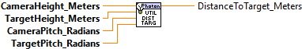
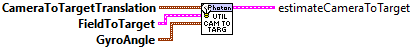
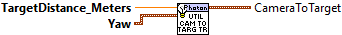
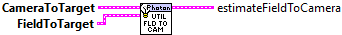
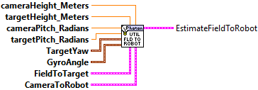
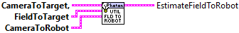

Algorithm from https://docs.limelightvision.io/en/latest/cs_estimating_distance.html Estimates range to a target using the target's elevation. This method can produce more stable results than SolvePNP when well tuned, if the full 6d robot pose is not required. Note that this method requires the camera to have 0 roll (not be skewed clockwise or CCW relative to the floor), and for there to exist a height differential between goal and camera. The larger this differential, the more accurate the distance estimate will be.
Units can be converted using the {@link edu.wpi.first.math.util.Units} class.
Inputs:
- CameraHeight_Meters -- The physical height of the camera off the floor
in meters.
- TargetHeightMeters -- The physical height of the target off the floor in meters.
This should be the height of whatever is being targeted (i.e. if the
targeting region is set to top, this should be the height of the top
of the target).
- CameraPitch_Radians -- The pitch of the camera from the horizontal plane
in radians.
Positive values up.
- TargetPitchRadian -- The pitch of the target in the camera's lens in radians.
Positive values up.
Outputs
- DistanceToTarget_Meters -- The estimated distance to the target in meters.

Estimates a Transform2d that maps the camera position to the target position, using the robot's gyro. Note that the gyro angle provided *must* line up with the field coordinate system -- that is, it should read zero degrees when pointed towards the opposing alliance station, and increase as the robot rotates CCW.
Inputs:
- CameraToTargetTranslation -- A Translation2d that encodes the x/y position
of the target relative to the camera.
- FieldToTarget -- A Pose2d representing the target position in the field coordinate
system.
- GyroAngle -- The current robot gyro angle, likely from odometry.
Outputs:
- EstimateCameraToTarget -- A Transform2d that takes us from the camera to
the target.

Estimate the Translation2d of the target relative to the camera.
Inputs:
- TargetDistance_Meters -- The distance to the target in meters.
- Yaw -- The observed yaw of the target.
Outputs:
- CameraToTarget -- The target's camera-relative translation.

Estimates the pose of the camera in the field coordinate system, given the position of the target relative to the camera, and the target relative to the field. This *only* tracks the position of the camera, not the position of the robot itself.
Inputs:
- CameraToTarget -- The position of the target relative to the camera.
- FieldToTarget -- The position of the target in the field.
Outputs:
- EstimateFieldToCamera -- The position of the camera in the field.

Estimate the position of the robot in the field.
Inputs:
- CameraHeightMeters The physical height of the camera off the floor in meters.
- TargetHeightMeters The physical height of the target off the floor in meters.
This should be the height of whatever is being targeted (i.e. if the targeting
region is set to top, this should be the height of the top of the target).
- CameraPitchRadians The pitch of the camera from the horizontal plane in
radians. Positive values up.
- TargetPitchRadians The pitch of the target in the camera's lens in radians. Positive
values up.
- TargetYaw The observed yaw of the target. Note that this *must* be
CCW-positive, and Photon returns CW-positive.
- GyroAngle The current robot gyro angle, likely from odometry.
- FieldToTarget A Pose2d representing the target position in the field coordinate
system.
- CameraToRobot The position of the robot relative to the camera. If the camera
was mounted 3 inches behind the "origin" (usually physical center) of the
robot, this would be Transform2d (3 inches, 0 inches, 0 degrees).
Outputs
- EstimateFieldToRobot -- The position of the robot in the field.

Estimates the pose of the robot in the field coordinate system, given the position of the target relative to the camera, the target relative to the field, and the robot relative to the camera.
Inputs:
- CameraToTarget -- The position of the target relative to the camera.
- FieldToTarget -- The position of the target in the field.
- CameraToRobot -- The position of the robot relative to the camera. If
the camera was mounted 3 inches behind the "origin" (usually
physical center) of the robot, this would be Transform2d(3 inches,
0 inches, 0 degrees).
Outputs:
- EstimateFieldToRobot -- The position of the robot in the field.